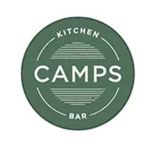

Hey,
I'm Jack.

If you want to chat...
Otherwise, check out my work!
My Story So Far
Bachelor's Degrees
Furman University
May 2025
Graduated with four degrees: B.S. in Computer Science with a minor in Data Analytics, B.S. in Applied Mathematics, B.A. in Business Administration, and B.S. in Information Technology. 3.6/4.0 GPA.
2025
VIEW PDF

Furman Engaged 2025
Furman University
Presentation to the student body on my research with Walt Disney World Resort from May 2024. Improved seating efficiency on the Tower of Terror ride by 5%, translating to an additional $20.8M per year in ticket sales.
April 2025
R
Python
JavaScript
HTML/CSS
GGPlot2
VIEW PDF

DataFest 2025
Furman University
Weekend-long data analytics competition against students from Furman and Emory. Won "Best Visualization" with two teammates.
April 2025
Python
Matplotlib
Pandas
Excel
2024


Data Quality and Assembly Line Researcher
BMW Group
Uncovered discrepancies between internal defect reporting datasets and launched a Flask-based website for forecasting assembly line bottlenecks in real-time to minimize downtime.
August 2024 - May 2025
Flask
JavaScript
HTML/CSS
Model Deployment
Attraction Efficiency Researcher
The Walt Disney Company
Collected 1100 data points on Tower of Terror seating patterns to model 7 seating strategies. Presented human-implementable strategy that increased efficiency by 5%, adding 480 riders per day.
May 2024
R
GGPlot2
Financial Planning and Analysis Intern
Shoals Technologies Group
Consolidated 7 datasets with SQL and Python to analyze market share and forecast revenue through 2027. Built Tableau dashboards for Q3 earnings report and discovered $100M in additional addressable markets.
April 2024 - August 2025
SQL
Python
Pandas
Matplotlib
Excel
Tableau
Data Pipelining
VIEW PDF

Furman Engaged 2024
Furman University
Presentation to the student body on my research on factors affecting diastolic blood pressure of pregnant women. Challenged traditional indicators of maternal health such as age and blood sugar, while idenitifying body temperature as an underappreciated factor.
April 2024
R
Tidyverse
GGPlot2
Data Visualization

DataFest 2024
Wake Forest University
Weekend-long data analytics competition against students from Furman and Wake Forest. Finalist with three teammates.
April 2024
Python
Pandas
Matplotlib
Excel
2023
VIEW PDF

Maternal Health Risk Prediction
Furman University
Statistics in R final project analyzing Kaggle dataset of 1200 pregnant women using 8 regression models including Ridge and LASSO. Data pipeline built in R. Co-authored 40-page report and presented to technical and non-technical audiences.
December 2023
R
Tidyverse
GGPlot2
Data Pipelining

Sales Data Analyst
Camps Kitchen and Bar
Combined and cleaned monthly sales summaries to explore relationships between quantity sold, location, payment type, and revenue composition. Presented findings to management for business decision support.
July 2023 - September 2023
Excel
Tableau
2021
VIEW PDF

Spotify Success Prediction
Furman University
Machine learning project analyzing Spotify track features to predict song success metrics. Applied classification algorithms and feature engineering techniques to identify key factors in music popularity.
December 2021
R
Tidyverse
GGPlot2
Feature Selection
Graphic Design and Marketing Assistant
Belvedere Direct Lending Advisors
Developed marketing campaigns resulting in 100% increase of professional LinkedIn connections. Curated client lists based on business requirements, increasing direct mailing list by 30%.
June 2021 - Present
Excel
High School Diploma
Walton High School
June 2021
Graduated from Walton's STEM Engineering program. Completed four courses in engineering, four in physics, five in math, and three in computer science. Passed 13/15 AP exams and scored a 35 on the ACT on my only attempt.
Skills
🛠️ Software
Tableau
Excel
GitHub
💻 Languages
Python
R
SQL
Java
JavaScript
HTML/CSS
📚 Libraries & Frameworks
Pandas
Matplotlib
Flask
TensorFlow
Scikit-learn
SciPy
XGBoost
Tidyverse
GGPlot2
⚡ Technical Experience
Exploratory Analysis
Data Pipelining
Feature Selection
Model Selection
Linear Regression
Logistic Regression
Decision Trees
Nueral Networks
Transformers
Statistical Tests
Model Deployment
Data Visualization
Technical Presentations
Non-Technical Presentations
Multi-threading
Web Development
REST API
Unit Testing
Get to Know Me
Does Jack prefer waffles or pancakes?
Question 1 of 10